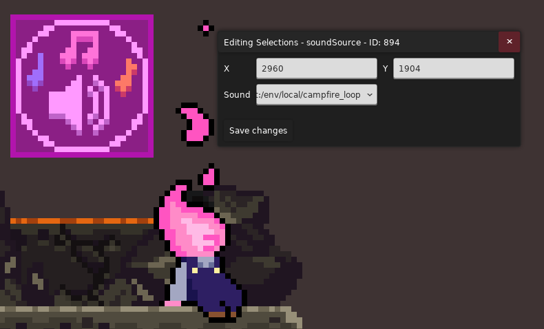

大纲
终于要来了吗
来了吗
了吗
吗
我们激动人心的 lua 示例讲解! 在忙活完其他的事之后我终于有功夫腾出来做这个模块了!
由于群友想要了解 journeys of a bygone wanderer 的开头, 烈冕号倒一最后, 画心 f2 到 f1 衔接, WELCOME TO MEGALOPHOBIA 的 STAFF ROLL 相关的剧情制作方式,
于是我会从他们开始, 从头到尾讲解它们关键/有趣的部分, 第一次出现的剧情技巧我会提供一个链接跳转到更详细的解释, 之后再次出现则不再重复, 那么话不多说, 让我们开↗始吧~
实用
快速找到某一段文本被哪个实体使用了
使用 BinaryXML 将地图 .bin 转化为 .xml, 之后在 Dialog 文件夹里的语言文件中找到对应的 dialog key,
之后在 .xml 中搜索这个 key 即可(除非这个 key 是硬编码的, 否则这个方法通用)
当然情况比较简单的话直接找到对应房间翻着看就行了
从某一个房间开始研究, 方便理清顺序
比如你可以查看 Map -> Metadata 中的 Starting Room 来从初始房间开始研究, 而不是捣鼓了半天连剧情从哪儿开始的都不知道
技巧
接下来我会讲解不同的技巧以及他们的出处, 但是为了简洁, 这里就以字母来指代地图名了, 如
- A: Journeys of a Bygone Wanderer
- B: The Solar Express(烈冕号)
- C: Gallery Collab(画游)
- D: WELCOME TO MEGALOPHOBIA 的 STAFF ROLL
运动
设置 Player 为 Dummy 状态
使用 CherryHelper/PlayerStateChange 将玩家状态设置为 11, 即 Dummy, 一般是用在一些简单的场合让玩家不能动
传送
- A: 通过 Lua Cutscene 触发对应 Flag, 触发对应 Trigger Trigger, 触发对应传送 Trigger, 传送到对应 Teleport Target
- B: 你可以调整传送 Trigger 的触发时间, 这样你就可以用 Trigger Trigger 做一个简单的开门进入效果(
设置 player 状态为 dummy ->
使用 flag 使前景淡入 -> 等待若干时间后开始传送)
滑入
B: 通过 XaphanHelper/Slope 斜坡实体, 用 lua 让玩家向右行走并播放下蹲动画, 可以参考视频
倒走
B: 使用 walkTo 的时候把 walkBackwards 参数设置为 true, 可以参考视频
| walkTo(15408, true) -- 第二个参数表示是否倒着播放动画, 同时水平翻转你的人物贴图, 让他看起来往左跑但实际上是在向右移动
|
文本
按序触发 UI 文本
A: 通过使用 Lua Cutscene 让 player 向右行走, 按序接触 UI Text
视效
黑色背景
- A: 啥背景都不加不就是黑色的了🤓☝️
- A: 整个黑色的图片
隐藏玩家
- A: 使用
Camera Target Trigger 将相机移动到一个看不到玩家的地方
- A: 使用异变
ExtendedVariantMode/BooleanExtendedVariantTrigger 的 AlwaysInvisible 直接隐藏玩家
- A: 直接把玩家塞土里
- A: 整个前景直接把玩家遮住
创建 NPC
1
2
3
4
5
6
7
8
9
10
11
12 | local celeste = require("#celeste") -- 导入对应的命名空间, 这样我们才能拿到对应的东西
-- 创建一个 NPC, 这里传入了玩家的相对位置, 方便定位 NPC 应该放在哪
theo = celeste.NPC(player.Position + vector2(60, 0)) -- 必做
-- 将 NPC 加入场景, 这样 NPC 才是活的
level:Add(theo) -- 必做
-- 创建一个动画, 这样 NPC 才能显示图片(动画), 这里的 "theo" 对应 Sprites.xml 里的动画组 ID
local sprite = celeste.GFX.SpriteBank:Create("theo") -- 必做
-- 把动画应用到 NPC 身上, 这样后续动画才能生效
theo:Add(sprite) -- 必做
-- 把 sprite 设置到 theo.Sprite 身上, 方面后面去拿这个 Sprite
theo.Sprite = sprite -- 可选
|
播放 NPC 动画
第一个参数为要播放的动画 ID, 也就是 Sprites.xml 动画组下对应的动画 ID, 如果要播放新的动画, 那么动画会直接切过去, 如果选择再次播放同样的动画, 这个时候需要参考第二个参数
第二个参数表示是否要重新播放动画, 如果你连续播放相同的动画, 到底是应该不理睬, 还是从该动画的第 0 帧开始重新播放
第三个参数表示是否从随机帧开始而不是第 0 帧
所以播放动画基本上是使用 sprite:Play("animation_id", false, false)
| local celeste = require("#celeste")
theo = celeste.NPC(player.Position + vector2(60, 0))
level:Add(theo)
local sprite = celeste.GFX.SpriteBank:Create("theo")
theo:Add(sprite)
sprite:Play("sitDown", false, false)
|
播放擦除动画
我们可以调用那些原版的玩家入场, 死亡的擦除特效来为我们的剧情增添活力
| -- 拿到原版的聚光灯 wipe 类型
local spotlight = require("#Celeste.SpotlightWipe")
-- 设置一下聚光灯聚焦位置
spotlight.FocusPoint = player.Position - getRoom().Camera.Position + vector2(30, 0)
-- 创建一个聚光灯(游戏会自动将其加入场景, 所以这里我们不用自己加了)
local wipe = spotlight(getRoom(), true)
-- 表示 wipe 将持续 2s
wipe.Duration = 2
|
淡入/出 Logo
B: 在 Map -> Stylegrounds 勾选 Fade In, 并设置好 flag, 这样在设置 flag 后背景就会淡入
A: 在 Map -> Stylegrounds 里设置对应的 Logo, 并使用 MaxHelpingHand/StylegroundFadeController 根据 flag 设置 Logo 的淡入淡出(可以精细的控制淡入淡出时间)
移动背景图片
A: 在 Map -> Stylegrounds 里设置对应的图片, 并使用 FrostHelper/StylegroundMoveTrigger 根据 flag 设置图片的移动, 参考视频
根据 flag 显示 decal
A: 使用 MaxHelpingHand/FlagDecal 即可, 参考视频中的火箭尾焰
- A: 使用
MaxHelpingHand/CustomNPCSprite, 在 lua 中通过固定代码拿到对应 NPC 而不再是手动创建, 参考视频
中的 Salem
| local salem = celeste.Mod.MaxHelpingHand.Entities.MoreCustomNPC.GetNPC("salem")
salem:SetHorizontalScale(-1) -- 朝左转
salem.Maxspeed = 40
say("SSC2024_fonda_salem01")
|
路过的 Bird
A: 使用 Bird Path, 并使用 Eevee 的 Flag Toggle Modifier 根据 flag 设置 Bird 的激活状态
闪烁的火堆
A: 火堆 Bonfire 本来就可以闪烁(憋笑)
夜空中飞舞的萤火虫
A: 使用 JungleHelper/Firefly, 参考视频链接
原版的门
A: 使用 door, 参考视频链接
粒子特效
A: 火箭发射粒子特效, 使用 FemtoHelper/ParticleEmitter, 搭配 flag 控制, 参考视频链接
自定义形状的云
A: 火箭发射粒子特效, 使用 FrostHelper/ArbitraryShapeCloud, 搭配 flag 控制, 参考视频链接
小鸟
A: 使用原版的 flutterBird, 参考视频链接
flag 控制的掉落块
A: 使用 VivHelper/CustomFallingBlock, 参考视频链接
flag 控制的碎块
- A: 使用
SorbetHelper/CrumbleOnFlagBlock, 参考视频链接
- B: 使用 Trigger Trigger 搭配原版的
rumbleTrigger 和 crumbleWallOnRumble 即可, 参考视频链接
下坠过场
虽然可以在 lua 代码里直接改, 但是使用 Trigger 更方便控制时机
A: 使用 CherryHelper/PlayerStateChange 将玩家的状态设置为 TempleFall, 参考视频链接
冲击波
- B: 使用
ContortHelper/BurstEffect, 在一个区域发出类似 Crystal Heart, Strawberry, 等实体释放的冲击波, 参考视频链接(
比如那个符号就是一个 decal 动画加一个 burst 特效)
- B: 使用
ContortHelper/BurstEffectTrigger, 参考视频链接
电梯
B: 使用 Communal/SolarElevator(移植自草莓酱) 即可, 参考视频链接
B: 参考视频链接
把你的 emoji 图片放到 Graphics/Atlases/Gui/emoji/ 目录下(.png格式的), 比如 Graphics/Atlases/Gui/emoji/MyCelesteMod/shock.png,
对话对应文本为:你的图片相对路径(不带.png):例如:MyCelesteMod/shock:
| SJ2021_SOLOIINI_CABLOGENTRY =
{anchor bottom}
[SIGNPOST]
Cabob 日志 #:SJ2021_Soloiini_100:
搓果冻跳已经把我的手给搓废了，但我还有脚呀！
可能等到我把脚也搓废的时候，我的速度还能再快一点点吧。
我需要做的就是利用一些方便放置的物体来打断我的冲刺。
如果我真打算离开这里做点别的事情而不是在这里{n}写些杂七杂八的东西，那么刚提到的东西可能会很有用。
|
使用蒙版
- B: 比如烈冕号这里的裂隙前的粒子特效, 本质上是黑洞改了个色然后蒙上一层
StylegroundMask, 参考视频链接
- C: 使用
PrismaticHelper/StylegroundsPanel, 使用其他房间的背景并以自身作为蒙版, 不过体感上跟用 StylegroundMask 可能差不多, 这个在背景多起来后可能会方便点,
参考视频链接
使用蒙版的方式非常的简单啊, 给你想加蒙版的 Styleground 加上对应 tag mask_{xxx}, 之后你在房间里放一个 StyleMaskHelper/StylegroundMask,
在里面 tag 属性里填上 xxx 即可, 还可以用 flag 控制该实体的显隐(顺带一提他的 fade 取的位置是根据相机位置来的)
上升的岩浆
B: 使用 FrostHelper/CustomRisingLava 搭配 everest/lavaBlockerTrigger 即可, 参考视频链接
starJumpBlock 调色
C: 使用 everest/starClimbGraphicsController 即可, 参考视频链接
声音
关闭行走声音
A: 使玩家在一个单向板上行走, 并将单向板的接触声音设置为 Resort Basement
关闭背景音乐
- A: 使用
Music Fade Trigger 将音量调为 0
- A: 用代码调整 Fmod 中的 Fade 参数, 参考视频
| local celeste = require("#celeste")
function onBegin()
celeste.Audio.SetMusicParam("fade", 0.0)
end
|
设置音源
- B: 使用
SoundSource 即可, 参考视频

播放(随机)音效
- B: 使用
ContortHelper/RandomSound 即可, 参考视频(虽然这里传送声不是很明显)
输入
我们可以在 lua 中监听蔚蓝中的键盘操作, 本质上归属于 C# 交互一栏
比如我们可能会使用 flag 显示一张图片, 之后如果玩家按下交互键什么的再关闭对应的 flag
1
2
3
4
5
6
7
8
9
10
11
12
13
14 | local celeste = require("#celeste")
function onBegin()
setFlag("note", true)
local Talked = false
while not Talked do
if celeste.Input.MenuConfirm.Check then
Talked = true
else
wait()
end
end
setFlag("note", false)
end
|
交互
可抓取物触发 Trigger
B: 使用 Trigger Trigger 的 Holdable Entered 模式即可, 参考视频
有选择的对话
对话
有选择的对话
由于本质上就是使用 choice 然后就完事了, 但是如果你想做些高级的功能,
比如每个对话需要什么前置对话(说完 A 才能说 B 这种), 所以这里提供一个辅助类来帮你完成这件事
首先看一个画游序章的例子(搭配了 LuaCutscnes/Lua Talker), 这是 choice 的一种比较常见的用法: 列出一系列选项,
想选哪个选哪个
granny.lua
| gallerycollab2024/Cutscenes/cny2024/prologue/granny.lua(已删除无关部分) |
|---|
1
2
3
4
5
6
7
8
9
10
11
12
13
14
15
16
17
18
19
20
21
22
23 | function onTalk()
disableMovement()
--选择对话部分
a = 0
repeat
local thischoice = choice("ChineseNewYear2024_0_lobby_prologue_grannytea_B_MAD_A", "ChineseNewYear2024_0_lobby_prologue_grannytea_B_MAD_B", "ChineseNewYear2024_0_lobby_prologue_grannytea_B_MAD_C", "ChineseNewYear2024_0_lobby_prologue_grannytea_B_MAD_D")
if thischoice == 1 then
say("ChineseNewYear2024_0_lobby_prologue_grannytea_B_MAD_A_01")
elseif thischoice == 2 then
say("ChineseNewYear2024_0_lobby_prologue_grannytea_B_MAD_B_01")
elseif thischoice == 3 then
say("ChineseNewYear2024_0_lobby_prologue_grannytea_B_MAD_C_01")
elseif thischoice == 4 then
say("ChineseNewYear2024_0_lobby_prologue_grannytea_B_MAD_D_01")
a = 514
else
say("ChineseNewYear2024_0_lobby_prologue_grannytea_B")
end
until (a > 114)
enableMovement()
end
|
再看一个烈冕号的例子或者例子{:target="_blank"
}或者例子, 这是
choice 的一种比较高级的用法, 如果我们想要弹出对话 B 之前需要对话过对话 A, 我们就得写一些 if else(当然 choice 本身是很朴素的, 关键是我们代码怎么写能让它实现更丰富的效果)
conductorConversation.lua
| Assets/SJ2021/Soloiini/conductorConversation.lua(已删除无关部分) |
|---|
1
2
3
4
5
6
7
8
9
10
11
12
13
14
15
16
17
18
19
20
21
22
23
24
25
26
27
28
29
30
31
32
33
34
35
36
37
38
39
40
41
42
43 | local result
function onTalk()
repeat
if not getFlag("solex_conductorA") then
result = choice("SJ2021_SOLOIINI_CONDUCTOR_CONV01_ASK", "SJ2021_SOLOIINI_CONDUCTOR_CONV02_ASK", "SJ2021_SOLOIINI_CONDUCTOR_CONV00_ASK")
if result == 1 then
say("SJ2021_SOLOIINI_CONDUCTOR_CONV01_SAY")
setFlag("solex_conductorA")
elseif result == 2 then
say("SJ2021_SOLOIINI_CONDUCTOR_CONV02_SAY")
setFlag("solex_conductorB")
else
result = 9
end
else
if not getFlag("solex_conductorB") then
result = choice("SJ2021_SOLOIINI_CONDUCTOR_CONV01_ASK", "SJ2021_SOLOIINI_CONDUCTOR_CONV02_ASK", "SJ2021_SOLOIINI_CONDUCTOR_CONV00_ASK")
if result == 1 then
say("SJ2021_SOLOIINI_CONDUCTOR_CONV01_SAY")
elseif result == 2 then
say("SJ2021_SOLOIINI_CONDUCTOR_CONV02_SAY")
setFlag("solex_conductorB")
else
result = 9
end
else
result = choice("SJ2021_SOLOIINI_CONDUCTOR_CONV01_ASK", "SJ2021_SOLOIINI_CONDUCTOR_CONV02_ASK", "SJ2021_SOLOIINI_CONDUCTOR_CONV03_ASK", "SJ2021_SOLOIINI_CONDUCTOR_CONV00_ASK")
if result == 1 then
say("SJ2021_SOLOIINI_CONDUCTOR_CONV01_SAY")
elseif result == 2 then
say("SJ2021_SOLOIINI_CONDUCTOR_CONV02_SAY")
elseif result == 3 then
say("SJ2021_SOLOIINI_CONDUCTOR_CONV03_SAY")
else
result = 9
end
end
end
until result == 9
end
|
所以为了统一这些用法, 简化逻辑, 我写了一个辅助类来帮大家方便的添加这些选项(vibe coding😋)
dialog_choice_helper.lua
| Mods/LuckyTestMap/Cutscenes/LuckyHelper/dialog_choice_helper.lua |
|---|
1
2
3
4
5
6
7
8
9
10
11
12
13
14
15
16
17
18
19
20
21
22
23
24
25
26
27
28
29
30
31
32
33
34
35
36
37
38
39
40
41
42
43
44
45
46
47
48
49
50
51
52
53
54
55
56
57
58
59
60
61
62
63
64
65
66
67
68
69
70
71
72
73
74
75
76
77
78
79
80
81
82
83
84
85
86
87
88
89
90
91
92
93
94
95
96
97
98
99
100
101
102
103
104
105
106
107 | -- 对话选项类
local DialogOption = {}
DialogOption.__index = DialogOption
function DialogOption:new(askString, sayString, prerequisites, alwaysAlive, callback)
local obj = {
ask = askString, -- 问的字符串
say = sayString, -- 回答的字符串
prerequisites = prerequisites or {}, -- 前置条件table（flag列表）
alwaysAlive = alwaysAlive or false, -- 表示是否在任意时候都显示(当然前置条件得先满足)
callback = callback -- 选择对话时调用的函数
}
setmetatable(obj, DialogOption)
return obj
end
-- 检查前置条件是否满足
function DialogOption:checkPrerequisites()
for _, flagName in ipairs(self.prerequisites) do
if not getFlag(flagName) then
return false
end
end
return true
end
-- 获取对应的flag名称（根据ask字符串生成）
function DialogOption:getFlagName()
return self.ask -- 或者可以自定义命名规则
end
-- 对话管理器类
dialogChoiceHelper = {}
dialogChoiceHelper.__index = dialogChoiceHelper
function dialogChoiceHelper:new()
local obj = {
options = {} -- 存储所有对话选项
}
setmetatable(obj, dialogChoiceHelper)
return obj
end
-- 添加对话选项
function dialogChoiceHelper:addOption(askString, sayString, prerequisites, alwaysAlive, callback)
local option = DialogOption:new(askString, sayString, prerequisites, alwaysAlive, callback)
table.insert(self.options, option)
end
-- 获取当前可用的对话选项
function dialogChoiceHelper:getAvailableOptions()
local available = {}
local askStrings = {}
for _, option in ipairs(self.options) do
local flagName = option:getFlagName()
-- 检查：1. 前置条件满足 2. 该对话未触发过活常驻
if option:checkPrerequisites() and (not getFlag(flagName) or option.alwaysAlive == true) then
table.insert(available, option)
table.insert(askStrings, option.ask)
end
end
return available, askStrings
end
-- 获取当前可用的对话选项
function dialogChoiceHelper.setTestFlag()
setFlag("dialogChoiceHelper's Test Flag QWQ!")
end
-- 执行对话循环
function dialogChoiceHelper:run(exitOption)
repeat
local availableOptions, askStrings = self:getAvailableOptions()
if exitOption ~= nil then
-- 添加退出选项
table.insert(askStrings, exitOption)
end
-- 没选项的话就退出
if #askStrings == 0 then
break
end
-- 显示选择
local result = choice(table.unpack(askStrings))
if exitOption ~= nil then
-- 如果选择了退出
if result == #askStrings then
break
end
end
local selectedOption = availableOptions[result]
if selectedOption.callback ~= nil then
selectedOption.callback()
end
say(selectedOption.say)
setFlag(selectedOption:getFlagName())
until false
end
return dialogChoiceHelper
|
看不懂也没关系, 这里直接讲使用方式
| Mods/LuckyTestMap/Cutscenes/LuckyHelper/Test.lua |
|---|
1
2
3
4
5
6
7
8
9
10
11
12
13
14
15
16
17
18
19
20
21
22
23
24
25
26
27
28
29
30
31
32
33
34
35
36
37
38
39
40
41
42
43
44 | -- 从你的 Mod 根目录开始导入这个辅助类(别忘了在旁边新建一个 lua 脚本把辅助类的代码粘过去)
local dialogChoiceHelper = loadCelesteAsset("Cutscenes/LuckyHelper/dialog_choice_helper")
-- lua talker 的函数入口, 还有一个是 onEnd
function onTalk()
disableMovement()
-- 新建对话管理器
local conductor = dialogChoiceHelper:new()
-- 添加对话选项
conductor:addOption(
"A_ask", -- 问题对应的 dialog key
"A_answer", -- 回答对应的 dialog key
{}, -- 前置条件: 填对应问题的 dialog key
true, -- 是否常驻: 在满足前置条件的情况下是否问过了还能问, 不填默认为 false
dialogChoiceHelper.setTestFlag --在选择完对应对话后, 调用一个函数(这里填入函数名即可), 比如这里你选择 A 对话后会输出一个测试 flag
)
conductor:addOption(
"B_ask",
"B_answer",
{} -- 无前置条件
)
conductor:addOption(
"C_ask",
"C_answer",
{ "A_ask" } -- 需要对话 A 完成
)
conductor:addOption(
"D_ask",
"D_answer",
{ "A_ask", "B_ask", "C_ask" } -- 需要前三个对话完成
)
-- 运行对话系统
-- conductor:run() -- 建议拿来用在 Lua Cutscene 中, 说完所有话之后就结束
conductor:run("exit") -- 填入 dialog key 后会自动添加一项用来退出的按钮, 建议拿来放在 Lua Talker 中, 方便反复询问
enableMovement()
end
|
连续对话
有时我们可能需要跟一个人物进行多次对话, 搭配上一些 lua 函数, 但是如果自己写 flag 去判断的话还是略嫌麻烦, 所以这里也提供一个辅助类来实现
dialog_sequence_helper.lua
1
2
3
4
5
6
7
8
9
10
11
12
13
14
15
16
17
18
19
20
21
22
23
24
25
26
27
28
29
30 | dialogSequenceHelper = {}
dialogSequenceHelper.__index = dialogSequenceHelper
function dialogSequenceHelper:new()
local obj = {
options = {}
}
setmetatable(obj, dialogSequenceHelper)
return obj
end
function dialogSequenceHelper:addItem(dialogKeyOrCallback, id)
table.insert(self.options, { dialogKeyOrCallback = dialogKeyOrCallback, id = id })
end
function dialogSequenceHelper:run()
for _, value in pairs(self.options) do
if not getFlag(value.id) then
if type(value.dialogKeyOrCallback) == "string" then
say(value.dialogKeyOrCallback)
else
value.dialogKeyOrCallback()
end
setFlag(value.id)
break
end
end
end
return dialogSequenceHelper
|
使用方式如下, 效果是我们交互一次触发 dialogA, 再交互一次触发 dialogB, 再交互一次会触发对应函数
| Mods/LuckyTestMap/Cutscenes/LuckyHelper/Test.lua |
|---|
1
2
3
4
5
6
7
8
9
10
11
12
13
14
15
16
17
18
19
20
21
22
23
24
25
26
27
28
29
30
31
32
33
34 | local dialogSequenceHelper = loadCelesteAsset("Cutscenes/LuckyHelper/dialog_sequence_helper")
function onTalk()
disableMovement()
-- 新建对话管理器
local sequence = dialogSequenceHelper:new()
-- 添加对话选项
sequence:addItem(
"dialogA", -- 填 dialog key, 或者一个函数
"A" -- id, 用来设置 flag, 方便我们后续判断要不要继续这个对话
)
sequence:addItem(
"dialogB",
"B"
)
sequence:addItem(
function()
say("awa")
wait(1)
say("qwq")
setFlag("talkEnd") -- 搭配外部 controller 使用, 为了让交互图标隐藏
end,
"C"
)
-- 运行
sequence:run()
enableMovement()
end
|
注意
你可能注意到了哪怕你能说的话都说完了 lua taker 也不会自动关闭交互图标, 所以推荐使用 LuckyHelper/TalkComponentController 包裹住交互图标, 并在 hideIfFlag 一栏填入对应 flag(比如这里的 talkEnd), 这样就可以达成说完话交互图标也不会弹出来的效果了
Flag
在玩家重生时设置 flag
使用 MaxHelpingHand/SetFlagOnSpawnController 即可, 如果用 trigger 在 player 重生的时候设置可能会导致一些更新上的时序问题, 而且摆起来也麻烦